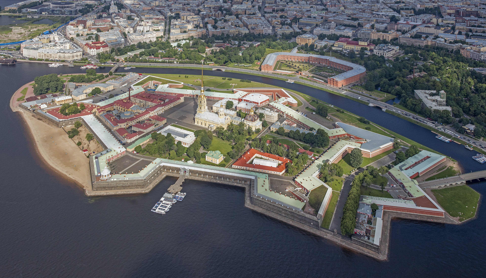
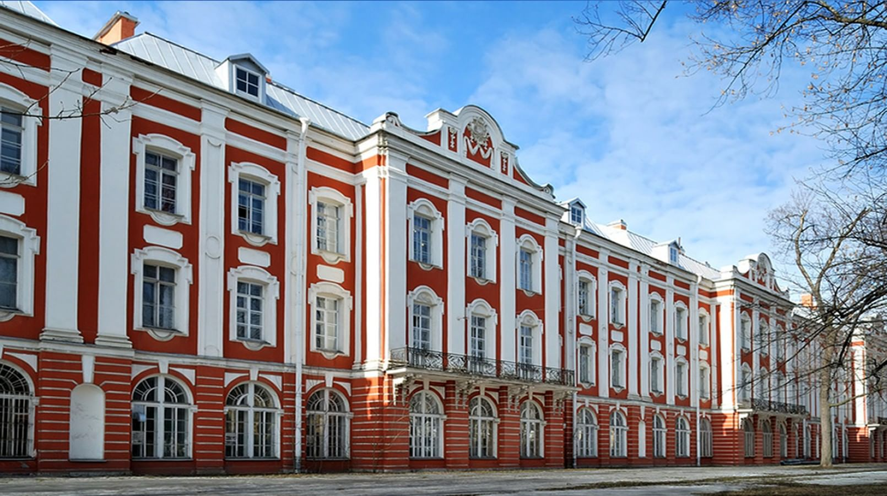
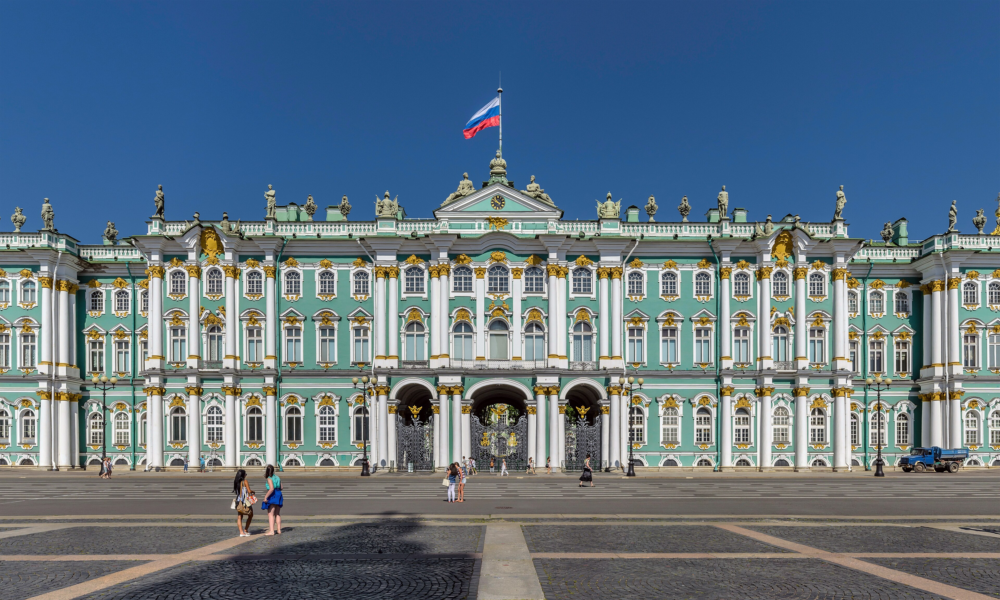
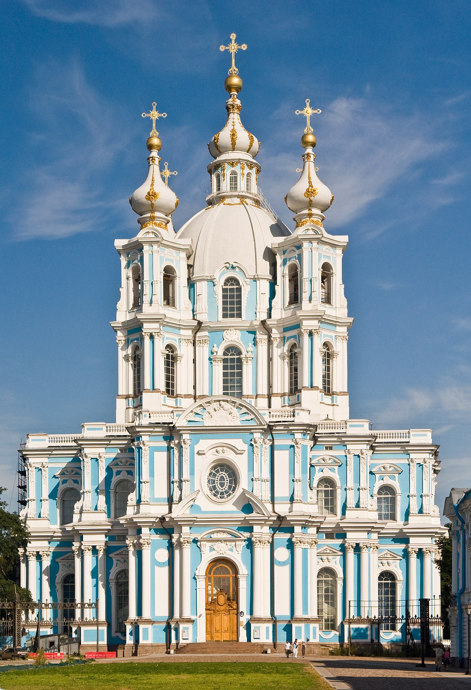
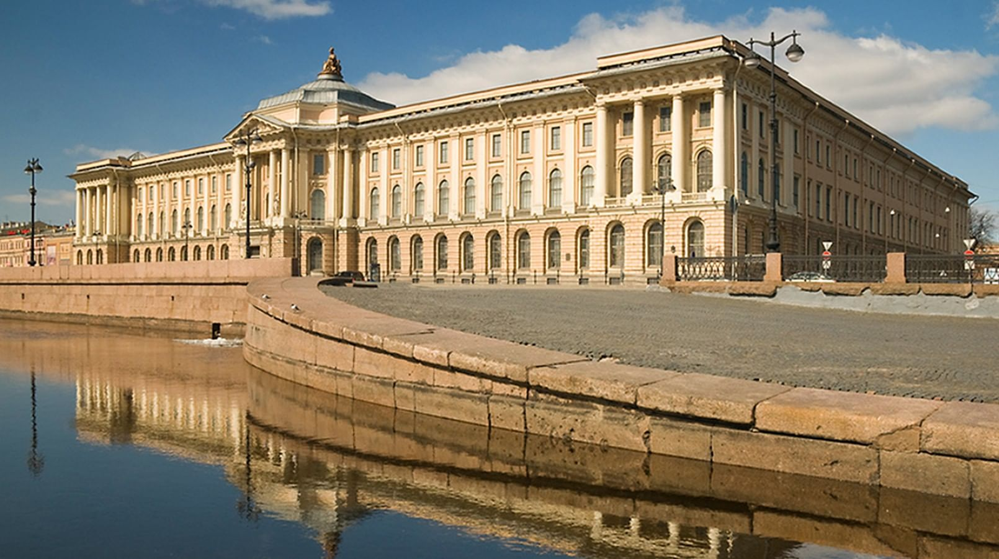
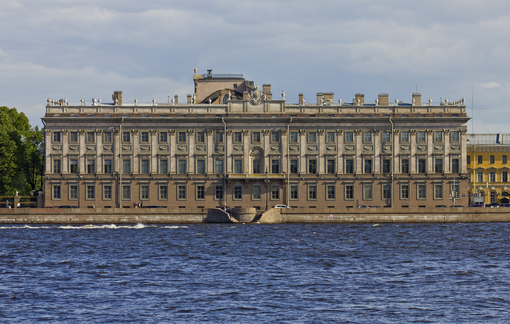

Архитектурный облик Санкт-Петербурга в XVIII веке
Сайт показывает, как Петербург за одно столетие прошёл путь от петровского барокко к зрелому классицизму и стал архитектурной моделью имперской столицы.
- 1. Петропавловская крепость и Петропавловский собор
- 2. Здание Двенадцати коллегий
- 3. Зимний дворец
- 4. Смольный собор
- 5. Академия художеств
- 6. Мраморный дворец
- 7. Таврический дворец
Как менялся язык петербургской архитектуры
В течение XVIII века облик города последовательно менялся: от петровского барокко к елизаветинскому барокко, затем к раннему и строгому классицизму.
Петровское барокко
Рациональность, шпили, североевропейское влияние.
Елизаветинское барокко
Пышность, пластичность фасадов, дворцовая торжественность.
Ранний классицизм
Симметрия, ясность композиции, спокойный декор.
Строгий классицизм
Античные мотивы, монументальность, логика пространства.
Как политика влияла на архитектуру
Основание новой столицы европейского типа и регулярного города.
Расцвет парадного барокко и дворцовой репрезентативности.
Идеи Просвещения и укрепление классицизма.
Петербург как проектируемый город
Маршрут по главным памятникам XVIII века
1. Петропавловская крепость и Петропавловский собор

- Петропавловская крепость — место основания Санкт-Петербурга. Она была заложена Петром I в 1703 году на Заячьем острове во время Северной войны со Швецией. Сначала крепость выполняла оборонительную функцию, однако вскоре она стала символическим центром нового города.
- Главным архитектурным объектом крепости является Петропавловский собор, построенный архитектором Доменико Трезини. Его высокий шпиль резко отличается от традиционных русских храмов с куполами и отражает влияние европейской архитектуры. Этот собор стал одной из первых высотных доминант города и важной частью его панорамы.
Почему новый столичный город начинался именно с крепости и собора?
Петропавловская крепость была заложена 16 мая 1703 года в день праздника Троицы. Первоначально она была земляной и состояла из шести бастионов, названных в честь ближайших соратников Петра I.
2. Здание Двенадцати коллегий

- Здание Двенадцати коллегий было построено в первой половине XVIII века для размещения высших органов государственного управления Российской империи. Эти учреждения были созданы Петром I в рамках реформ государственной системы.
- Архитектором здания был Доменико Трезини. Комплекс представляет собой длинное здание, состоящее из двенадцати одинаковых частей, каждая из которых предназначалась для отдельной коллегии. Такая композиция символизировала порядок, системность и новую бюрократическую структуру государства.
- Сегодня в этом здании располагается Санкт-Петербургский государственный университет.
Как архитектура может передавать идею сильного государства?
Пётр I хотел сделать его главным центром города. План предусматривал: каналы вместо улиц регулярную сетку кварталов систему укреплений. Богданов прямо пишет, что остров хотели устроить «наподобие Амстердама».
3. Зимний дворец

- Зимний дворец — одна из самых известных построек Санкт-Петербурга и главный символ императорской власти XVIII века. Он был построен в 1754–1762 годах по проекту архитектора Франческо Бартоломео Растрелли.
- Дворец выполнен в стиле елизаветинского барокко, который отличается богатым декором, сложной пластикой фасадов и торжественной архитектурой. Огромные размеры здания и роскошное оформление подчёркивали статус России как мощной европейской державы.
- Сегодня Зимний дворец входит в комплекс Государственного Эрмитажа — одного из крупнейших музеев мира.
Почему архитектура середины века стала более роскошной?
4. Смольный собор

- Смольный собор является одним из наиболее выдающихся памятников русского барокко. Он был построен по проекту Франческо Бартоломео Растрелли в середине XVIII века.
- Собор задумывался как часть большого монастырского ансамбля, который должен был стать центром женского монастыря, основанного по инициативе императрицы Елизаветы Петровны. Архитектура собора отличается лёгкостью, изящными декоративными элементами и гармоничными пропорциями.
- Смольный собор считается одним из самых красивых храмов Санкт-Петербурга и важной частью архитектурного наследия города.
Почему церковные ансамбли были важны для имперского образа города?
5. Академия художеств

- Императорская Академия художеств была основана в 1757 году и стала главным образовательным центром для художников, скульпторов и архитекторов Российской империи.
- Здание Академии, построенное во второй половине XVIII века, является ярким примером раннего классицизма. В архитектуре здания проявляются симметрия, строгие пропорции и сдержанный декор, характерные для этого стиля.
- Академия сыграла огромную роль в развитии русской архитектуры и искусства, поскольку именно здесь обучались многие выдающиеся мастера.
Почему архитектуре нужны не только здания, но и академии?
6. Мраморный дворец

- Мраморный дворец был построен в 1768–1785 годах по проекту архитектора Антонио Ринальди для фаворита Екатерины II — графа Григория Орлова.
- Особенностью дворца является использование большого количества различных видов мрамора, благодаря чему здание и получило своё название. Архитектура дворца сочетает элементы позднего барокко и раннего классицизма.
- Мраморный дворец отражает переходный этап развития архитектуры Петербурга, когда пышность барокко постепенно уступала место более строгому и рациональному классицизму.
Почему в эпоху Просвещения ценились порядок и симметрия?
7. Таврический дворец

- Таврический дворец был построен в 1783–1789 годах архитектором Иваном Старовым для князя Григория Потёмкина. Он является одним из лучших примеров зрелого классицизма в архитектуре Санкт-Петербурга.
- В отличие от барочных дворцов середины века, Таврический дворец отличается простотой форм, симметрией и монументальностью. Архитектура здания подчёркивает гармонию и порядок, характерные для эстетики классицизма.
- Этот дворец завершает архитектурное развитие XVIII века в Петербурге и показывает переход к более строгим и рациональным архитектурным решениям.
Как изменилось представление о красоте города к концу XVIII века?
Кто формировал городской ландшафт
Один из создателей раннего Петербурга и петровского барокко.
Главный мастер елизаветинского барокко, автор Зимнего дворца и Смольного.
Важная фигура перехода к классицизму.
Представитель раннего классицизма и один из авторов Академии художеств.
Лидер зрелого классицизма, автор Таврического дворца.
Мастер строгого классицизма конца XVIII века.
Почему XVIII век определил современный облик Петербурга
Петербург XVIII века — это не просто набор красивых зданий, а целостная архитектурная программа.
От петровского барокко город унаследовал регулярность и ориентацию на Европу, от елизаветинского барокко — парадность, а от классицизма — ясность и масштаб.
Современный центр города во многом продолжает именно те принципы, которые были заложены в XVIII веке.
Материал собран по энциклопедическим и музейным сведениям о петербургских памятниках XVIII века и градостроительных планах эпохи. В частности использовался "А. И. Богданов — «Описание Санктпетербурга» (1751)".
Мини-викторина
- Петровское барокко
- Ампир
- Модерн
- Иван Старов
- Ф. Б. Растрелли
- Джакомо Кваренги